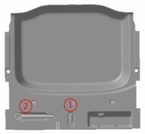
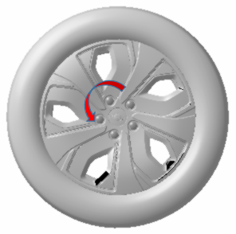

Снятие
Извлечь зажим гайки (№ 1) из коробки для инструментов в багажнике

С помощью зажима гайки по очереди снять декоративные крышки колесных гаек
Открутить гайки крепления колеса против часовой стрелки
Крутящий момент: 110 ± 5 N.m

Подъем автомобиля
Выкрутить гайки крепления колеса, снять колесо и Шина
Запрещается использовать нагрев для ослабления заклинивших колесных гаек. Нагрев может повредить колесо и ступицу.
Удалить ржавчину и грязь с монтажных поверхностей колеса, ступицы или тормозного диска. Это может привести к ослаблению колесных болтов или отсоединению колеса во время движения автомобиля, несоблюдение данного указания может привести к травмам.
Установка
Установка выполняется в порядке, обратном снятию.